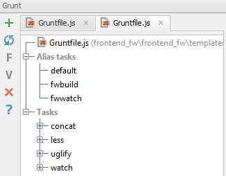
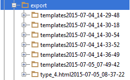
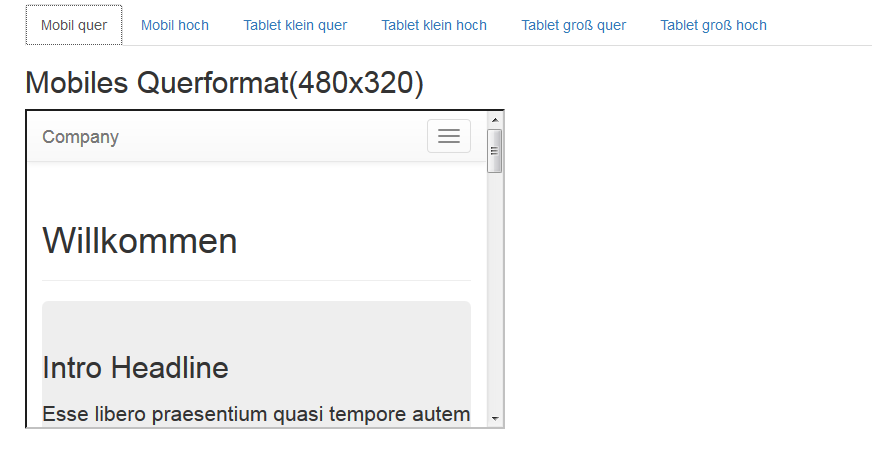

Frontend Entwickler sowie Composer einer Frontendabteilung sollen bei der schnellen Erstellung statischer HTML-Vorlagen unterstützt werden.
Die Abteilung setzt IntelliJ unter MacOS ein, einige der Entwickler kennen sich mit Datenbanken und serverseitiger Programmierung nicht aus, sollen aber trotzdem in der Lage sein, einige Anpassungen an dem Baukasten vorzunehmen
Für HTML-Vorlagen gelten die folgenden Regeln:
Benamungsschema:
Template Language: Django Template bietet eine Reihe von Build-in Tags und Filter
Das Frontend für Baukasten und Kundenprojekt sind streng getrennt, daher gibt es für den Baukasten und das Kundenprojekt auch getrennte static Verzeichnisse:
'\frontendfw\frontendfw\templates\static' für den Baukasten
'\frontendfw\frontendfw\static' für das Kundenprojekt
Im static Verzeichnis für den Baukasten gibt es zwei verschiedene Ordner für Bilder. Alle Dateien, die unter 'img' werden im Bundle Export erfasst, Bilder in 'fwimg' sind nur für die lokale Entwicklung gedacht.
Die Konkatination von JavaScript Modulen und das Kompilieren von LESS-Dateien erfolgt über Grunt
In der Grunt Konsole von IntelliJ können die folgenden Alias Tasks verwendet werden:

Auf der Vorlagenübersicht befindet sich der Button 'Bundle exportieren'
Nach Auslösen des Buttons werden automatisch alle konfigurierten HTML-Vorlagen inklusive der statischen Dateien als statischs HTML im Ordner 'frontend_fw\export' abgelegt.

Jeder Export erhält einen eigenen Ordner 'templates[Zeitstempel des Exports]'

Die Ordnerstruktur ist die folgende:
Die Konfiguration erfolgt in 'frontend_fw\core\templatesettings.py'
Der Export Prozess erfasst standardmäßig alle im Templateordner 'page' vorhandenen Vorlagen, mittels BUILDPAGEEXCLUDED können Ausnahmen definiert werden.
Vorsicht! BUILDPAGEEXCLUDED bezieht sich nur auf den Kopierprozess, nicht auf die Templateübersichtsseite
Um die Templateübersicht so flexibel wie möglich zu gestalten (Mehrfachnennung einer Vorlage in mehreren Abschnitten, Nichterfassen einer exportierten Vorlage...) wurden die Export und Übersicht entkoppelt. Der Frontendentwickler muss selbst darauf achten, dass in der Übersicht keine in BUILDPAGEEXCLUDED aufgeführten Vorlagen verlinkt sind.
Jedes Template kann auch einzeln exportiert werden.
Einzelexports haben keine Konfiguration und werden ohne Templateübersichtsseite exportiert
Auf der Vorlagenübersicht befindet neben jeder Vorlage ein Export Link
Nach Auslösen des Links wird das Template im Browser angezeigt und automatisch inklusive der statischen Dateien als statischs HTML im Ordner 'frontend_fw\export' abgelegt.
Jeder Export erhält einen eigenen Ordner 'templatename[Zeitstempel des Exports]'

Die Ordnerstruktur ist die folgende:
Auf der Vorlagenübersicht befindet neben jeder Vorlage ein Link Responsive
Folgt man dem Link, kommt man zu einer Tabansicht von Viewport Varianten

Die Konfiguration erfolgt in 'frontend_fw\core\templatesettings.py'
Das Erstellen von Screenshots erfolgt über die IntelliJ Konsole mittels des Scripts 'frontend_fw\screens\screenshot.sh'
Dazu aktiviert man das virtual environment, wechselt in das 'screens' Verzeichnis und ruft das screenshot Skript mit den Argumenten Templatename und URL auf
Es erstellt im screens Verzeichnis ganzseitige Screenshots in den Breiten 600, 768 und 320. Sind andere bzw. weitere Größen erwünscht, muss das Array in Zeile 3 des Scripts geändert werden.
Die erstellten Screenshots haben den Aufbau screenshot-templatename-'groesse.png
Das Skript erwartet 2 Argumente: Templatename und die URL, unter der das Template aufgerufen werden soll
Rechteproblem mit webkit2png.py bzw. screenshot.sh: beide müssen ausführbar sein